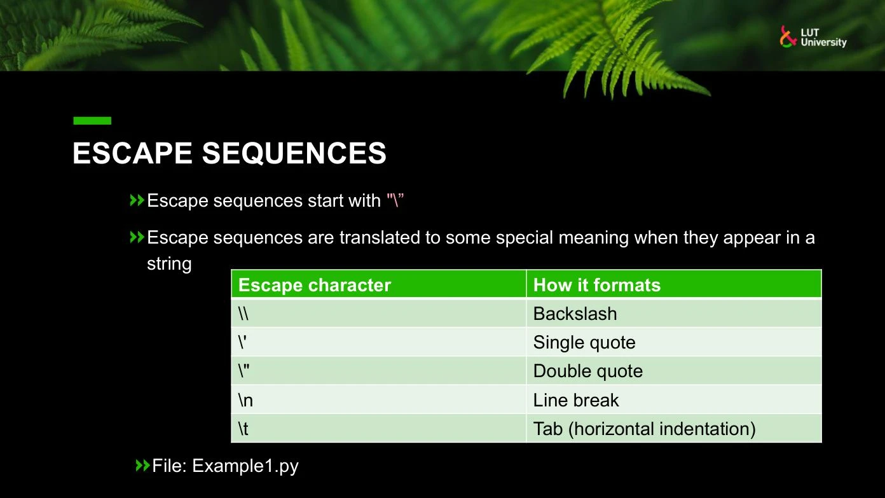
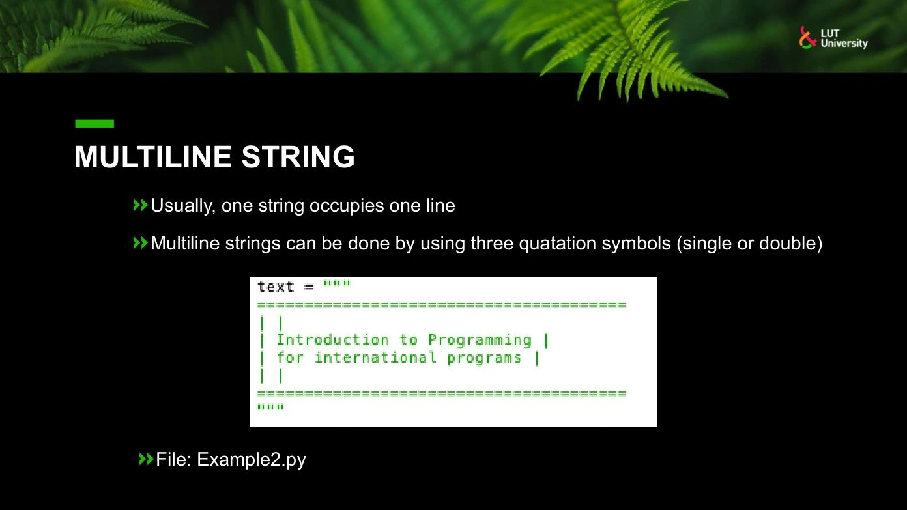

CT60A0250 编程基础 · 第 03 / 18 讲
③ 注释、字符串与输出控制
Comments, Strings and Print Control
所属章节：第 2 章 字符串与打印
资料来源 · 5 项 / 已附 0 项
Ch 2 - Part 1 - Comments.pdf未附原文件Ch 2 - Part 2 - Strings.pdf未附原文件Ch 2 - Part 3 - More on strings.pdf未附原文件Ch 2 - Part 4 - Modify Printing.pdf未附原文件Ch 2 - Part 5 - Converting ints and floats.pdf未附原文件
未附文件仅列原始名称；版本与核对日期由维护者登记。
本节定位
第 2 章前半部分讲的是同一件事的两面：让机器读懂人、也让人读懂机器。注释把意图写进代码，字符串承载所有文本，print 的 sep 与 end 决定版式，round() 与 int() 决定小数怎么落地。
上一讲解决了「数据怎么算、怎么读进来、怎么印出去」；这一讲把文本本身拆开：字符怎么编号、怎么切段、为什么改不动。下一讲开始让程序做判断。
学完本讲你应当能够：
- 用
#与 docstring 写出有用的注释，而不是复述代码 - 说明
\n、\t、\\、\"各自是什么意思 - 用正索引和负索引取出任意一个字符，并解释
IndexError的来源 - 用切片取出子串、反转字符串，并说清「含 start 不含 stop」
- 解释字符串为什么不可变，改用切片重组来「修改」它
- 用
sep/end控制多值输出与不换行输出
一、注释：写给人看的代码
课件先从动机讲起：真实的程序会长到几百行、几百个文件（Part 1 p2），到那时连作者本人也会忘记某一行为什么要那样写。注释（comment）就是留给「人」读的说明，解释器整段跳过。
1.1 单行注释以 # 开始
从 # 到行尾都属于注释，不会被运行（Part 1 p3）。它既可以独占一行，也可以写在代码右边当行内注释。
# 这一整行都是注释，解释器什么也不做
price = 12.5 # 行内注释：# 之前照常执行
name = "page#1" # 这个 # 在字符串里面，不算注释
print(name)page#1最后一行给出了一条容易忽略的边界：# 只有出现在字符串之外才开启注释；写在引号里它就是普通字符。链接、颜色值 "#ff0000"、井号标签都不需要转义。
1.2 三引号字符串与文档字符串
课件讲多行字符串时说「一件事占一行太麻烦」，于是用三个引号把多行包起来（Part 2 p5）。这种写法常被借来当块注释：
"""
这段说明被当作块注释使用。
解释器仍会创建这个字符串对象，只是没有变量接收，
于是它立刻被丢弃，效果看起来与注释相同。
"""
print("done")严格说它不是注释，而是「未绑定变量的字符串字面量」。真正有身份的是放在函数、类或模块第一行的那种字符串，叫文档字符串（docstring）：
def area(r):
"""Return the area of a circle with radius r."""
return 3.14159 * r ** 2
print(area(2))
help(area)help(area) 会把 docstring 打印出来——这正是课程示例程序里每个函数开头都写一句 """Prints the menu options for calculating areas.""" 的原因：它既是注释，又能被工具读取。
x = x + 1 # add one 是废话；x = x + 1 # 补偿从 0 开始的下标 才有价值。二、字符串是一串字符
2.1 定义与长度
字符串（string）是字符的序列：字母、数字、符号、空格、汉字各算一个字符。用一对单引号或一对双引号包起来即可，两种写法完全等价（Part 2 p2）：
s1 = 'This is a string'
s2 = "This is a string"
print(s1 == s2)
print(len("programming"))True
11len() 返回字符个数（Part 2 p3），数的是「字符」而不是「字节」：len("中文") 得 2。
2.2 转义序列
有些字符没法直接写进引号里（引号本身、换行），于是用反斜杠开头的转义序列（escape sequence）表示（Part 2 p4）。
| 转义写法 | 实际内容 | 典型用途 |
|---|---|---|
\\ | 一个反斜杠 | Windows 路径、正则表达式里常见 |
\' | 单引号 | 在单引号字符串里表示引号本身 |
\" | 双引号 | 在双引号字符串里表示引号本身 |
\n | 换行 | newline，最常用 |
\t | 制表符 | tab，用来对齐列 |
print("第一行\n第二行")
print("姓名\t年龄")
print("He said \"hi\"")
print('It\'s ok')第一行
第二行
姓名 年龄
He said "hi"
It's ok第二行的输出里，姓名与年龄之间是一个制表符（显示宽度随终端而定），所以看起来像几个空格。
2.3 多行字符串
text = """第一行
第二行
第三行"""
print(text)
print(len(text))内容里的真实换行会原样变成字符串中的 \n，所以 len(text) 把换行符也算进去。这里有个隐蔽的坑：三引号内部每行行首的空白也是字符，把多行字符串写在缩进很深的函数里，内容会凭空多出一排空格。
2.4 拼接与重复
print("Hello" + " " + "World")
print("-" * 20)
print(("ab" + "\n") * 2, end="")Hello World
--------------------
ab
ab+ 只能把字符串接字符串："a" + 1 抛 TypeError，必须先 str(1)。乘法 * 需要一个整数，"ab" * 0 得空字符串，负数也得空字符串。
"abc" "def" 就是 "abcdef"。写长句时很方便，但列表里漏了逗号写成 ["a" "b"]，会静默变成只有一个元素 "ab"，不报错、很难发现。三、索引：正着数与倒着数
每个字符有一个位置编号，从 0 开始（Part 3 p2）。长度为 12 的 "I love code!"：I 是 0，空格是 1，l 是 2……最后一位 ! 是 11。
s = "I love code!"
print(s[0], s[2], s[11])
print(len(s) - 1)I l !
11写 s[len(s) - 1] 而不是硬编码 s[11]，字符串一变长度就不需要改代码。负索引（negative index）从右往左数，最后一位是 -1（Part 3 p3）：
s = "I love code!"
print(s[-1])
print(s[-2])
print(s[-len(s)])!
e
Ilen(s) - 1 或小于 -len(s)，会抛 IndexError: string index out of range。空字符串连 s[0] 都不能取。负索引的合法范围是 -len(s) 到 -1。四、字符串不可变
immutable 的意思是「创建之后内容不能改」（Part 3 p4）。下面这条语句不是「把第 0 个字符换成 H」，而是直接报错：
s = "hello"
s[0] = "H"TypeError: 'str' object does not support item assignment能做的是整体换一个新字符串：s = "Hello"。要记住区别：这是「让变量指向另一个字符串」，不是「修改原来那个字符串」。本讲末尾的切片重组，以及第 8 讲的列表可变性，都建立在这一点上。
五、切片：一次取一段
切片（slice）的完整形式是 s[start:stop:step]，规则只有一条：含 start，不含 stop（Part 3 p5）。三个参数都可以省略。
| 写法 | 含义 | 例子（s = "I love code!"） | 结果 |
|---|---|---|---|
s[2:6] | 下标 2 到 5 | s[2:6] | love |
s[:4] | 开头到下标 3 | s[:4] | I lo |
s[7:] | 下标 7 到结尾 | s[7:] | code! |
s[:] | 整串的副本 | s[:] == s | True |
s[::2] | 每隔一个取 | s[::2] | Ilv oe |
s[::-1] | 整串反转 | s[::-1] | !edoc evol I |
三条边界：切片越界不报错（s[5:100] 自动截到末尾）；start 大于 stop 且步长为正时返回空串 ""；切片得到的是新字符串，与原来不是同一个对象。
因为切片产生新串，「改字符串」的标准手法就是切片重组（Part 3 p6）：把不要的段切掉，把新段拼进去。
s = "I love code!"
print(s[:2] + "really " + s[2:])I really love code!同理，把首字母改成大写可以写 s[0].upper() + s[1:]；去掉末尾换行可以写 s[:-1]（仅当确实以换行结尾时）。
s[::-1] 反转；s[-3:] 取末三位；s[1:] 去掉首字符。考试里出现频率极高，也是写回文、扩展名、日期重排的通用零件。六、print 的 sep 与 end
print() 有两个可选参数控制版式（Part 4 p2–p6）：sep 是多个值之间的分隔符，默认一个空格；end 是结尾追加的内容，默认换行 \n。
print("a", "b", "c")
print("a", "b", "c", sep="-")
print("a", "b", "c", sep="")
print("no newline", end="")
print(" continues here")
print("end of report", end="\n\n")a b c
a-b-c
abc
no newline continues here
end of report
sep 可以是任意字符串：空串、" -> "、", "；end 也是，包括 ""（不换行）、"\t"（同行制表）、"\n\n"（多空一行）。
这两个参数只影响 print 的输出，不改变数据本身："a" + "b" 永远是 "ab"，不会因为 sep 变成 a-b。循环里逐个印又不想换行，写 print(item, end="")；想用逗号隔开，写 print(item, end=", ")，并自行处理末尾多出来的那个逗号。
print("a" + "b", sep="-") 输出的仍是 ab：只有一个参数，分隔符没有用武之地。想要 a-b 必须写 print("a", "b", sep="-")。七、int、float 与 round
7.1 round() 是四舍五入，但有两个意外
round(x) 返回最接近的整数，round(x, n) 保留 n 位小数（Part 5 p2）。
print(round(6.7))
print(round(6.7, 0))
print(round(3.14159, 2))
print(round(2.5), round(3.5))7
7.0
3.14
2 4意外一：round(6.7, 0) 得 7.0 而不是 7——只要给了第二个参数，返回类型仍是 float。意外二：round(2.5) 得 2 不是 3，因为 Python 用「银行家舍入」（banker's rounding），恰好 .5 时向偶数靠。
7.2 int() 是截断，不是四舍五入
int(x) 把 float 转成 int 时，小数部分被直接丢弃（Part 5 p2）。
print(int(6.9))
print(int(-6.9))
print(int(3.0))6
-6
3int(-6.9) 得 -6，是向零截断而不是向下取整；要向下取整得用 // 或第 10 讲的 math.floor。字符串转数字有前提：int("42") 可以，int(" 42 ") 也可以（两端空白被忽略），int("3.7") 不行——抛 ValueError，得先 float("3.7") 再 int()。
八、常见错误与调试提示
"total: " + 12 抛 TypeError。三种改法：str(12)、交给 print 的 sep、或 f"total: {12}"（推荐）。print("hello) 报 SyntaxError: unterminated string literal。错误标记常落在行尾，真正的问题在少了一个引号，往回数引号个数即可。s[0:3]；写成 s[0:2] 只有两个字符。自检方法：切片结果长度 = stop - start（步长为 1 时）。len()、单个下标、切片分别打印出来，比盯着代码猜快得多；也可以把字符串放进 repr() 里，让 \n 显示成两个字符。字符串不可变（immutable）：s[0] = "H" 抛 TypeError，只能让变量指向新串。切片是这个限制的副产品——s[::-1] 反转、s[-3:] 取末三位、s[1:] 去首字符，都产生新对象；规则只有“含 start 不含 stop”，取前三字符是 s[0:3]。切片越界不报错，和索引越界抛 IndexError 形成对比。
注释写“为什么”而非复述“做什么”：x = x + 1 # add one 是废话，写清补偿下标才有价值。三引号的多行文本严格说不是注释，是未绑定变量的字符串字面量；只有函数／类第一行的才是 docstring，能被 help() 读出。两隐蔽坑：相邻字符串字面量会静默拼接，print("a"+"b", sep="-") 只有一个参数，分隔符不生效。
原版图页（源 PDF 插图页）





| English | 中文 | 说明 / 例句 |
|---|---|---|
| comment | 注释 | Anything after # is ignored by the interpreter. |
| docstring | 文档字符串 | A string as the first statement of a function; readable with help(). |
| escape sequence | 转义序列 | \n is a newline, \t is a tab. |
| immutable | 不可变的 | A string cannot be changed in place: s[0] = "H" raises TypeError. |
| index | 索引 / 下标 | The position of a character, starting from 0. |
| negative index | 负索引 | s[-1] is the last character. |
| slice | 切片 | s[start:stop] includes start but excludes stop. |
| concatenation | 拼接 | Joining two strings with +. |
| repetition | 重复 | "ab" * 3 gives "ababab". |
| len() | 长度 | len("programming") returns 11. |
| sep | 分隔符 | print("a", "b", sep="-") prints a-b. |
| end | 结尾字符 | print("x", end="") suppresses the newline. |
| rounding | 舍入 | round(3.14159, 2) returns 3.14. |
| truncation | 截断 | int(6.9) returns 6, dropping the decimals. |
s = "Fundamentals of Programming"，输出它的长度、首字符、末字符、反转串与大写形式。把五个操作分开写，输出带标签，便于核对：
s = "Fundamentals of Programming"
print("length:", len(s))
print("first:", s[0])
print("last:", s[-1])
print("reversed:", s[::-1])
print("upper:", s.upper())输出：
length: 27
first: F
last: g
reversed: gnimmargorP fo slatnemadnuF
upper: FUNDAMENTALS OF PROGRAMMING逐点解释：len(s) 数到 27（含两个空格）；s[0] 是 F；s[-1] 等价于 s[26]，是 g；s[::-1] 步长为 −1，从末尾倒着走；s.upper() 返回新串，原串不变。
sep 画分隔线。思路：表格宽度固定为 20，用 f-string 的 :<12（左对齐）与 :>8（右对齐）拼列；分隔线用 print("-" * 20) 生成。
item = "Coffee beans"
price = 9.5
qty = 3
total = price * qty
print("ITEM AMOUNT")
print("-" * 20)
print(f"{item:<12}{total:>8.2f}")
print("-" * 20)
print("TOTAL", f"{total:.2f}", sep=" = ")输出：
ITEM AMOUNT
--------------------
Coffee beans 28.50
--------------------
TOTAL = 28.50解释：:<12 把 "Coffee beans" 补到 12 列左对齐；:>8.2f 把 28.5 补到 8 列右对齐并保留两位；最后一行演示 sep=" = " 只在多参数时生效。
1:02:05 的形式。思路：小时 = // 3600；余下秒数再除以 60 得分钟；最后 % 60 得秒。分钟与秒要求两位补零，用 f-string 的 :02d。
total = 3725
h = total // 3600
m = total % 3600 // 60
s = total % 60
print(f"{h}:{m:02d}:{s:02d}")1:02:05解释：3725 // 3600 = 1；3725 % 3600 = 125，125 // 60 = 2；3725 % 60 = 5。% 与 // 的配合是「拆分数量」的通用套路，第 5 讲算硬币找零会再遇到。
- 判断
"level"与"Level"是否回文，分别输出结果。 - 从邮箱
"student.name@lut.fi"里取出用户名与域名两部分。 - 把金额 1234567.891 打印成
1,234,567.89。 - 把
"2024-11-20"改写成20.11.2024（只用切片与拼接）。 - 用一条
print输出1-2-3-4-5，再用循环外的方式输出12345（提示：sep）。
答案与思路
1. 回文判断统一写 s == s[::-1]。"level" == "level" → True；"Level" == "leveL" → False。若要不区分大小写，先 s.lower() 再比较。
2. user, domain = s.split("@") 需要解包（第 8 讲元组）；本讲范围内用 s.split("@")[0] 与 s.split("@")[-1]，得到 student.name 与 lut.fi。
3. print(f"{1234567.891:,.2f}") → 1,234,567.89。逗号是千分位分隔符，必须写在 .2f 前面。
4. 年月日各四位两位两位，固定长度最好切：d[8:] + "." + d[5:7] + "." + d[:4] → 20.11.2024。若格式可能变化，改用 split("-") 再倒序拼接。
5. print(1, 2, 3, 4, 5, sep="-") → 1-2-3-4-5；print(1, 2, 3, 4, 5, sep="") → 12345。两题都不要写字符串加法。
s[-1]；sep 与 end 的默认值；字符串不可变的含义；round() 与 int() 的区别。s[:3] 不是 s[:2]；取末三位是 s[-3:] 不是 s[-2:]。画格子数一遍再写。s[0:3] = "abc" 对字符串非法（TypeError），切片只能读；要「改」必须拼一个新串并重新赋值给变量。"C:\temp" 里的 \t 会被当成制表符；需要字面反斜杠时写 "C:\\temp"，或用正斜杠 "C:/temp"。round() 的银行家舍入、int() 的向零截断、以及 0.1 + 0.2 != 0.3 这三件事常被拿来出判断题。浮点比较别写 ==，写 abs(a - b) < 1e-9，或先 round(a, 5)。操作清单
动一段文本之前，先问四件事
- 这段文本的长度是多少？最后一位下标是
len(s) - 1，负索引最后一位是 −1 - 我要的是「一个字符」还是「一段子串」？一个字符用
s[i]，一段用切片 - 切片的 stop 要不要 +1？默念一遍「含头不含尾」
- 结果是只读展示，还是要拼回一个新串？字符串永远不能被原地修改
调试字符串输出
- 用
repr(s)看一眼隐藏的\n与\t - 数字与字符串拼接前先
str()，或直接用 f-string - 多值输出先用
sep，不要手工拼"-" - 循环里不想换行时检查是否写了
end="" - 切片报空串时，先打印
len(s)确认没有越界
| 源文件 | 页码 | 覆盖知识点 |
|---|---|---|
| Ch 2 - Part 1 - Comments.pdf | p2–p3 | 注释动机、# 注释规则、解释器跳过注释 |
| Ch 2 - Part 2 - Strings.pdf | p2–p6 | 字符串定义、len()、转义序列表、多行字符串、+ 与 * |
| Ch 2 - Part 3 - More on strings.pdf | p2–p6 | 正/负索引、不可变性、切片六种写法、切片重组修改字符串 |
| Ch 2 - Part 4 - Modify Printing.pdf | p2–p6 | sep 与 end 的默认值和任意取值、两者组合 |
| Ch 2 - Part 5 - Converting ints and floats.pdf | p2 | round(x)、int(x) 截断 |
跳过项：Part 2–4 中标注 Example1.py–example7.py 的截图页只给出代码文件本身（代码已并入本讲示例与正文），不另设页码；Moodle 上的「课程考核 / 作业截止」类行政页不进入本讲。
拓展项：docstring 与 help()、相邻字面量隐式拼接、repr() 调试、银行家舍入的解释，都属于在原知识点上补背景，不引入新考点。